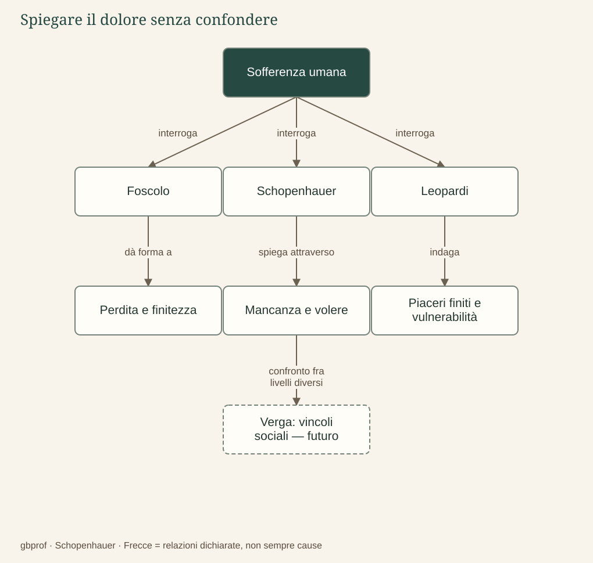

B · Schopenhauer e la letteratura · 03
Perché l’uomo soffre?
Il dolore nasce dal desiderio, dal limite o dai rapporti nei quali viviamo?
La parola «dolore» raccoglie esperienze differenti: una ferita del corpo, la perdita di una persona, una speranza politica tradita, una vita segnata dalla povertà. Accostare gli autori non significa appiattire questa varietà dentro una formula, ma chiedere quali relazioni ciascuno costruisca fra i mali concreti e una condizione più generale. Il medesimo episodio può assumere un significato diverso secondo la domanda che gli rivolgiamo.
Schopenhauer: dalla mancanza al ritorno del volere
Nel sistema schopenhaueriano la sofferenza si comprende a partire dal carattere del volere. Desiderare esprime una mancanza; la soddisfazione la interrompe senza sopprimere la possibilità del bisogno; la noia mostra che persino l’assenza di un oggetto urgente può lasciare l’esistenza inquieta. Il problema non è soltanto che gli oggetti desiderati siano difficili da raggiungere, ma che nessun oggetto particolare possa chiudere definitivamente il tendere.
La morte di un individuo e il conflitto fra viventi appartengono a un quadro più ampio, nel quale la Volontà si manifesta senza un fine capace di riconciliare tutte le sofferenze. Sarebbe però sbagliato dire che una persona soffre semplicemente perché «vuole troppo»: il dolore fisico, la dipendenza e la vulnerabilità appartengono alla vita anche quando non esiste un’ambizione eccessiva. Una tesi metafisica non può essere usata per colpevolizzare chi patisce.
Leopardi: sproporzione e vulnerabilità naturale
In Leopardi la teoria del piacere mette in evidenza lo scarto tra il desiderio illimitato e la finitezza delle soddisfazioni. L’attesa può aprire possibilità che l’esperienza concreta restringe; la festa immaginata non coincide con la festa vissuta. Tuttavia la sua riflessione non rimane chiusa nell’interiorità di un individuo deluso: nel pensiero maturo comprende malattia, invecchiamento e distruzione, cioè mali che non dipendono soltanto da aspettative troppo elevate.
L’Islandese cerca infatti una vita appartata, priva di grandi ambizioni, e incontra ugualmente la sofferenza. L’operetta mette in crisi l’idea che sia sufficiente moderare il desiderio per ottenere una tranquillità garantita. Il rapporto fra desiderio e dolore si intreccia con la condizione corporea del vivente e con un ciclo naturale che non tutela la felicità dei singoli. Non occorre introdurre la Volontà come cosa in sé per comprendere questo ragionamento.
Foscolo: il limite dentro la storia e gli affetti
La sofferenza foscoliana nasce dalla morte e dalla dissoluzione, ma assume forme storiche e personali: esilio, perdita della patria, separazione dagli affetti, impossibilità di un ritorno. Il mondo materiale pone il limite generale; le vicende politiche e le relazioni danno a quel limite un volto concreto. Il tradimento di una speranza civile non è equivalente alla fame di un organismo, anche se entrambi mostrano una dipendenza da ciò che non controlliamo.
In Alla sera il pensiero del «nulla eterno» si accompagna a una momentanea pacificazione dello spirito combattivo. L’accostamento con l’arte schopenhaueriana è fecondo se riguarda la tregua dall’inquietudine, ma diventa scorretto se trasforma il sonetto in una dimostrazione della teoria delle Idee. Foscolo produce una forma poetica nella quale il conflitto può essere temporaneamente contenuto; non espone un sistema di liberazione dal fondamento metafisico del desiderio.
Riconoscere il livello della spiegazione
Per confrontare bene, dobbiamo distinguere tre domande: che cosa è accaduto a questa persona, quale struttura dell’esperienza l’episodio rivela, quale immagine del mondo permette di interpretarla? Una perdita ha cause determinate e un significato biografico, ma può anche interrogare la finitezza e il rapporto tra desiderio e realtà. Passare direttamente dalla prima alla terza domanda produce spesso semplificazioni.
Verga permetterà in futuro di aggiungere un’analisi narrativa dei meccanismi economici e sociali, nei quali l’aspirazione individuale incontra gerarchie, interessi e vincoli. L’analogia con Schopenhauer riguarderà la dinamica di competizione e sconfitta; non autorizzerà a dire che una società descritta da Verga sia semplicemente la Volontà travestita da paese siciliano. Il futuro confronto dovrà essere dimostrato sui testi.
Il problema in un’immagine
Dopo la lettura
Mappa di sintesi


Leggi la mappa in forma testuale
- Sofferenza umana interroga Foscolo.
- Sofferenza umana interroga Schopenhauer.
- Sofferenza umana interroga Leopardi.
- Foscolo dà forma a Perdita e finitezza.
- Schopenhauer spiega attraverso Mancanza e volere.
- Leopardi indaga Piaceri finiti e vulnerabilità.
- Mancanza e volere confronto fra livelli diversi Verga: vincoli sociali — futuro.
Fermati sul problema
Alla sera e l’arte schopenhaueriana possono essere accostate in quale senso?
Confronta il tuo ragionamento
Come esperienze di tregua dall’inquietudine, conservando la differenza delle loro spiegazioni. Una convergenza nell’effetto descritto non stabilisce identità teorica né dipendenza storica.